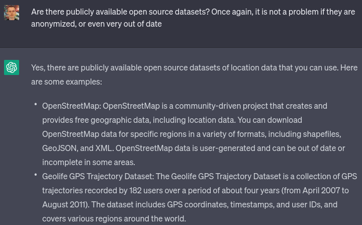
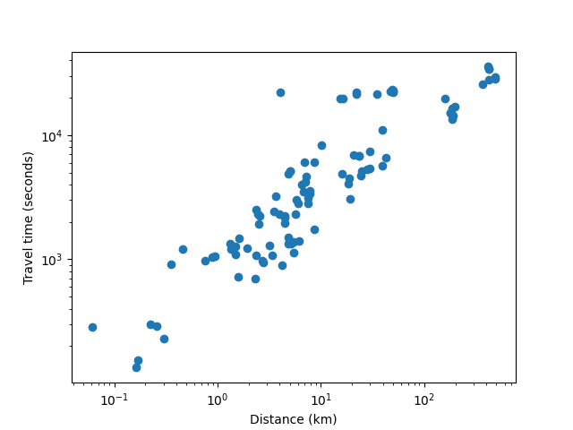
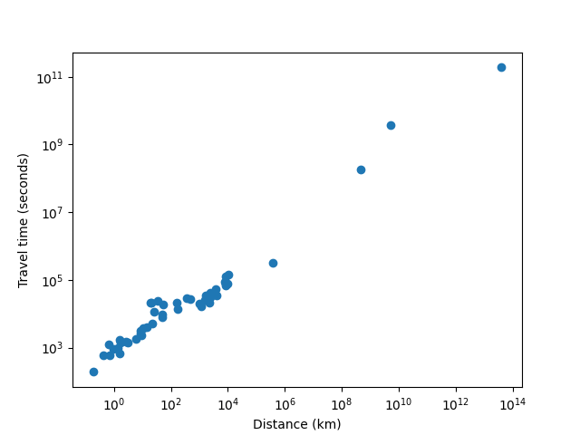
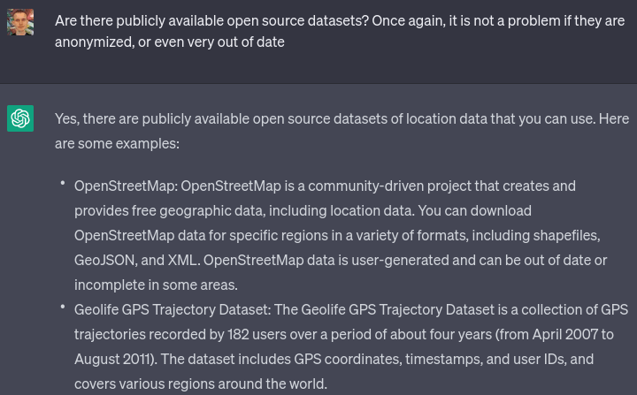
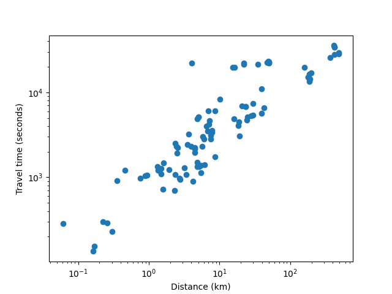
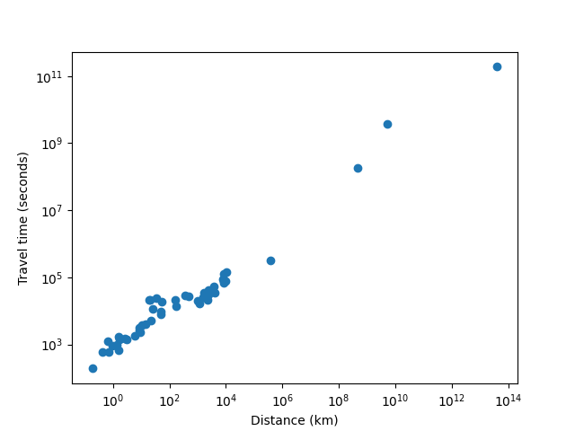

Travel time ~= 750 * distance ^ 0.6
2023 Apr 14
See all posts
Travel time ~= 750 * distance ^ 0.6
As another exercise in using ChatGPT 3.5 to do weird things and
seeing what happens, I decided to explore an interesting question: how
does the time it takes to travel from point A to point B scale with
distance, in the real world? That is to say, if you sample
randomly from positions where people are actually at (so, for example,
56%
of points you choose would be in cities), and you use public
transportation, how does travel time scale with distance?
Obviously, travel time would grow slower than linearly: the further
you have to go, the more opportunity you have to resort to forms of
transportation that are faster, but have some fixed overhead. Outside of
a very few lucky cases, there is no practical way to take a bus to go
faster if your destination is 170 meters away, but if your destination
is 170 kilometers away, you suddenly get more options. And if
it's 1700 kilometers away, you get airplanes.
So I asked ChatGPT for the ingredients I would need:




I went with the GeoLife
dataset. I did notice that while it claims to be about users around
the world, primarily it seems to focus on people in Seattle and Beijing,
though they do occasionally visit other cities. That said, I'm not a
perfectionist and I was fine with it. I asked ChatGPT to write me a
script to interpret the dataset and extract a randomly selected
coordinate from each file:

Amazingly, it almost succeeded on the first try. It did make
the mistake of assuming every item in the list would be a number
(values = [float(x) for x in line.strip().split(',')]),
though perhaps to some extent that was my fault: when I said "the first
two values" it probably interpreted that as implying that the
entire line was made up of "values" (ie. numbers).
I fixed the bug manually. Now, I have a way to get some randomly
selected points where people are at, and I have an API to get the public
transit travel time between the points.
I asked it for more coding help:
- Asking how to get an API key for the Google Maps Directions API (it
gave an answer that seems to be outdated, but that succeeded at
immediately pointing me to the right place)
- Writing a function to compute the straight-line distance between two
GPS coordinates (it gave the correct answer on the first try)
- Given a list of
(distance, time) pairs, drawing a
scatter plot, with time and distance as axes, both axes logarithmically
scaled (it gave the correct answer on the first try)
- Doing a linear regression on the logarithms of distance and time to
try to fit the data to a power law (it bugged on the first try,
succeeded on the second)
This gave me some really nice data (this is filtered for distances
under 500km, as above 500km the best path almost certainly includes
flying, and the Google Maps directions don't take into account
flights):

The power law fit that the linear regression gave is:
travel_time = 965.8020738916074 * distance^0.6138556361612214
(time in seconds, distance in km).
Now, I needed travel time data for longer distances, where the
optimal route would include flights. Here, APIs could not help me: I
asked ChatGPT if there were APIs that could do such a thing, and it did
not give a satisfactory answer. I resorted to doing it manually:
- I used the same script, but modified it slightly to only output
pairs of points which were more than 500km apart from each
other.
- I took the first 8 results within the United States, and the first 8
with at least one end outside the United States, skipping over results
that represented a city pair that had already been covered.
- For each result I manually obtained:
to_airport: the public transit travel time from the
starting point to the nearest airport, using Google Maps outside China
and Baidu Maps inside China.from_airport: the public transit travel time to the end
point from the nearest airportflight_time: the flight time from the starting point to
the end point. I used Google Flights) and
always took the top result, except in cases where the top result was
completely crazy (more than 2x the length of the shortest), in which
case I took the shortest.
- I computed the travel time as
(to_airport) * 1.5 + (90 if international else 60) + flight_time + from_airport.
The first part is a fairly aggressive formula (I personally am much more
conservative than this) for when to leave for the airport: aim to arrive
60 min before if domestic and 90 min before if international, and
multiply expected travel time by 1.5x in case there are any mishaps or
delays.
This was boring and I was not interested in wasting my time to do
more than 16 of these; I presume if I was a serious researcher I would
already have an account set up on TaskRabbit or some similar
service that would make it easier to hire other people to do this for me
and get much more data. In any case, 16 is enough; I put my resulting
data here.
Finally, just for fun, I added some data for how long it would take
to travel to various locations in space: the
moon (I added 12 hours to the time to take into account an average
person's travel time to the launch site), Mars, Pluto
and Alpha
Centauri.
You can find my complete code here.
Here's the resulting chart:

travel_time = 733.002223593754 *
distance^0.591980777827876
WAAAAAT?!?!! From this chart it seems like there is a surprisingly
precise relationship governing travel time from point A to point B that
somehow holds across such radically different transit media as walking,
subways and buses, airplanes and (!!) interplanetary and hypothetical
interstellar spacecraft. I swear that I am not cherrypicking; I did not
throw out any data that was inconvenient, everything (including the
space stuff) that I checked I put on the chart.
ChatGPT 3.5 worked impressively well this time; it certainly stumbled
and fell much less than my previous misadventure, where I tried
to get it to help me convert
IPFS bafyhashes into hex. In general, ChatGPT seems uniquely good at
teaching me about libraries and APIs I've never heard of before but that
other people use all the time; this reduces the barrier to entry between
amateurs and professionals which seems like a very positive thing.
So there we go, there seems to be some kind of really weird fractal
law of travel time. Of course, different transit technologies could
change this relationship: if you replace public transit with cars and
commercial flights with private jets, travel time becomes somewhat more
linear. And once we upload our minds onto computer hardware, we'll be
able to travel to Alpha Centauri on much crazier vehicles like ultralight craft
propelled by Earth-based lightsails) that could let us go anywhere
at a significant fraction of the speed of light. But for now, it does
seem like there is a strangely consistent relationship that puts time
much closer to the square root of distance.
Travel time ~= 750 * distance ^ 0.6
2023 Apr 14 See all postsAs another exercise in using ChatGPT 3.5 to do weird things and seeing what happens, I decided to explore an interesting question: how does the time it takes to travel from point A to point B scale with distance, in the real world? That is to say, if you sample randomly from positions where people are actually at (so, for example, 56% of points you choose would be in cities), and you use public transportation, how does travel time scale with distance?
Obviously, travel time would grow slower than linearly: the further you have to go, the more opportunity you have to resort to forms of transportation that are faster, but have some fixed overhead. Outside of a very few lucky cases, there is no practical way to take a bus to go faster if your destination is 170 meters away, but if your destination is 170 kilometers away, you suddenly get more options. And if it's 1700 kilometers away, you get airplanes.
So I asked ChatGPT for the ingredients I would need:

I went with the GeoLife dataset. I did notice that while it claims to be about users around the world, primarily it seems to focus on people in Seattle and Beijing, though they do occasionally visit other cities. That said, I'm not a perfectionist and I was fine with it. I asked ChatGPT to write me a script to interpret the dataset and extract a randomly selected coordinate from each file:
Amazingly, it almost succeeded on the first try. It did make the mistake of assuming every item in the list would be a number (
values = [float(x) for x in line.strip().split(',')]), though perhaps to some extent that was my fault: when I said "the first two values" it probably interpreted that as implying that the entire line was made up of "values" (ie. numbers).I fixed the bug manually. Now, I have a way to get some randomly selected points where people are at, and I have an API to get the public transit travel time between the points.
I asked it for more coding help:
(distance, time)pairs, drawing a scatter plot, with time and distance as axes, both axes logarithmically scaled (it gave the correct answer on the first try)This gave me some really nice data (this is filtered for distances under 500km, as above 500km the best path almost certainly includes flying, and the Google Maps directions don't take into account flights):

The power law fit that the linear regression gave is:
travel_time = 965.8020738916074 * distance^0.6138556361612214(time in seconds, distance in km).Now, I needed travel time data for longer distances, where the optimal route would include flights. Here, APIs could not help me: I asked ChatGPT if there were APIs that could do such a thing, and it did not give a satisfactory answer. I resorted to doing it manually:
to_airport: the public transit travel time from the starting point to the nearest airport, using Google Maps outside China and Baidu Maps inside China.from_airport: the public transit travel time to the end point from the nearest airportflight_time: the flight time from the starting point to the end point. I used Google Flights) and always took the top result, except in cases where the top result was completely crazy (more than 2x the length of the shortest), in which case I took the shortest.(to_airport) * 1.5 + (90 if international else 60) + flight_time + from_airport. The first part is a fairly aggressive formula (I personally am much more conservative than this) for when to leave for the airport: aim to arrive 60 min before if domestic and 90 min before if international, and multiply expected travel time by 1.5x in case there are any mishaps or delays.This was boring and I was not interested in wasting my time to do more than 16 of these; I presume if I was a serious researcher I would already have an account set up on TaskRabbit or some similar service that would make it easier to hire other people to do this for me and get much more data. In any case, 16 is enough; I put my resulting data here.
Finally, just for fun, I added some data for how long it would take to travel to various locations in space: the moon (I added 12 hours to the time to take into account an average person's travel time to the launch site), Mars, Pluto and Alpha Centauri. You can find my complete code here.
Here's the resulting chart:

travel_time = 733.002223593754 * distance^0.591980777827876WAAAAAT?!?!! From this chart it seems like there is a surprisingly precise relationship governing travel time from point A to point B that somehow holds across such radically different transit media as walking, subways and buses, airplanes and (!!) interplanetary and hypothetical interstellar spacecraft. I swear that I am not cherrypicking; I did not throw out any data that was inconvenient, everything (including the space stuff) that I checked I put on the chart.
ChatGPT 3.5 worked impressively well this time; it certainly stumbled and fell much less than my previous misadventure, where I tried to get it to help me convert IPFS bafyhashes into hex. In general, ChatGPT seems uniquely good at teaching me about libraries and APIs I've never heard of before but that other people use all the time; this reduces the barrier to entry between amateurs and professionals which seems like a very positive thing.
So there we go, there seems to be some kind of really weird fractal law of travel time. Of course, different transit technologies could change this relationship: if you replace public transit with cars and commercial flights with private jets, travel time becomes somewhat more linear. And once we upload our minds onto computer hardware, we'll be able to travel to Alpha Centauri on much crazier vehicles like ultralight craft propelled by Earth-based lightsails) that could let us go anywhere at a significant fraction of the speed of light. But for now, it does seem like there is a strangely consistent relationship that puts time much closer to the square root of distance.